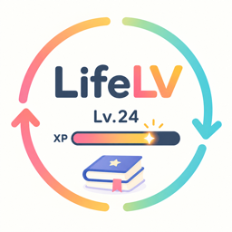
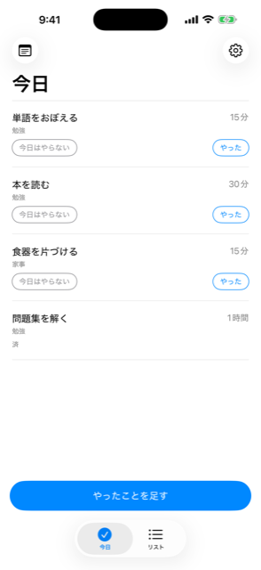
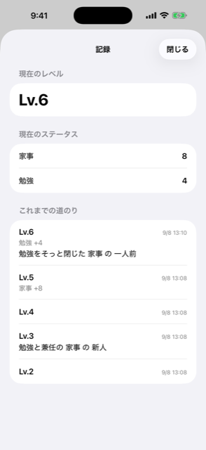
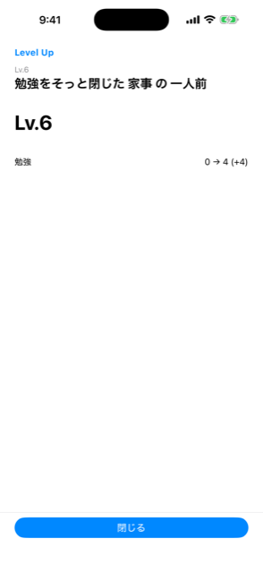
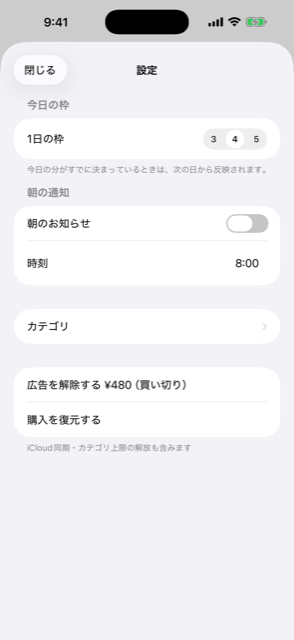

iPhone アプリ
LifeLV（ライフエルブイ）は、今日やることを「自分で選ばない」タスクアプリです。
溜めたタスクが50個あっても、画面に出るのは3〜5個だけ。選ぶ手間も、消化できなかった負い目も生まれません。
タスクを全部並べると、やる前に「どれからやるか」を決める作業が挟まります。そして並んだままのものが、未達として毎日目に入ります。
優先順位をつけるところで疲れます。できなかったものは赤字やバッジになって残り、開くこと自体が気重になります。
アプリが選んで並べるので、決める作業がありません。やらなかったものはリストに戻るだけで、未達の表示は一切出しません。
期限があるもの、繰り返しのもの、そしてこれまであまり時間を使えていない分野から、アプリが選んで並べます。だから偏りが自然に埋まっていきます。
枠の数は 3・4・5 から一度だけ選びます（既定は4）。毎日決めさせることはしません。
今日の枠は、その日最初に開いたときに決まります。日中に新しいタスクを登録しても、それが今日の枠に割り込むことはありません（翌日から候補に入ります）。

出てきたものが今日の気分に合わないなら、そのまま外してください。確認も出ませんし、回数の制限もありません。外した分は別のものが入ります。
外したタスクは今日はもう出ません。翌日には普通に候補へ戻ります。
枠を全部消化したら「今日の分は終わり」で閉じます。追加のセットは出しません。

記録した時間が経験値になります（1時間＝1XP）。分野ごとの合計が「ステータス」として開くので、どこに時間を使えていて、どこが薄いのかが後から見えます。
今日の枠に出ていないことをやったときも、「やったことを足す」から記録できます。打ち始めると登録済みのタスクが候補に出るので、「これ登録してたっけ」を思い出す必要はありません。
Lv.100まで登るとレベルだけが1に戻り、次の周が始まります。分野ごとに積んだ時間はそのまま引き継がれます。
「新人」から始まり、主任、課長、部長……と役職を登っていきます。称号の前半は、そのときのあなたの偏りから作られます。
たとえば勉強に時間を使えていない時期には、そこを名指しした称号が出ます。真に受けないでください。
他人と比べる機能はありません。順位も、SNSへの共有もありません。


月額の課金はありません。一度購入すれば、同じ Apple ID で復元できます。
通知は朝1回だけで、中身も件数も書きません。未消化の催促や、夜の追い立てはありません（通知そのものを切っておくこともできます）。
本アプリが表示するレベル・経験値・時間は、あなたが入力した内容の集計です。実際の活動量を計測するものではなく、健康や生産性の指導・診断を目的とするものではありません。